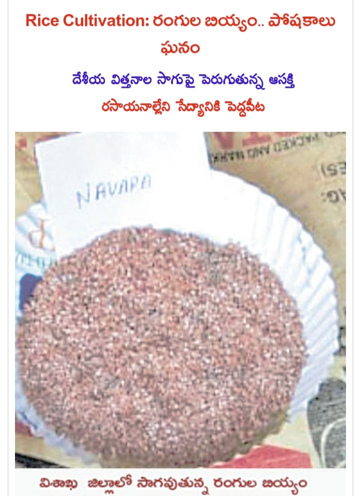
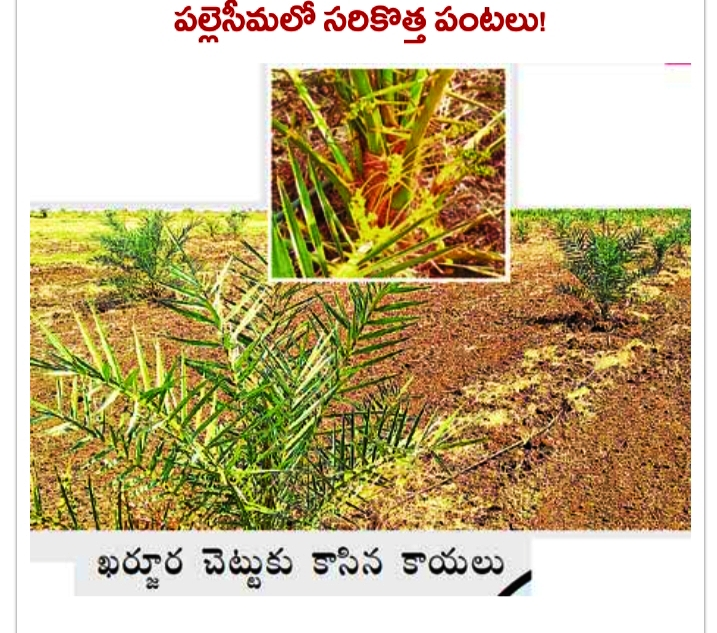
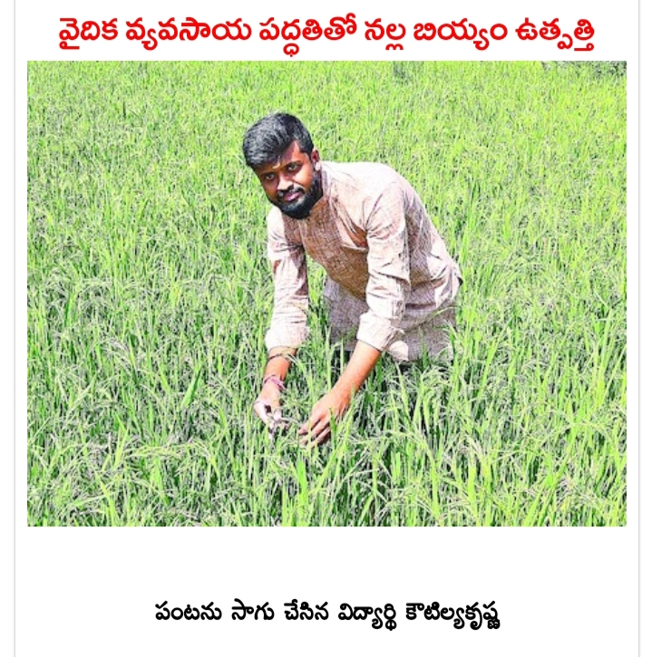
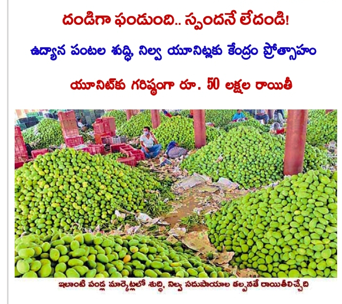
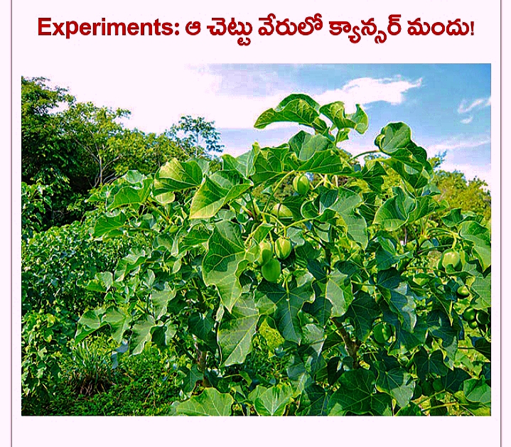
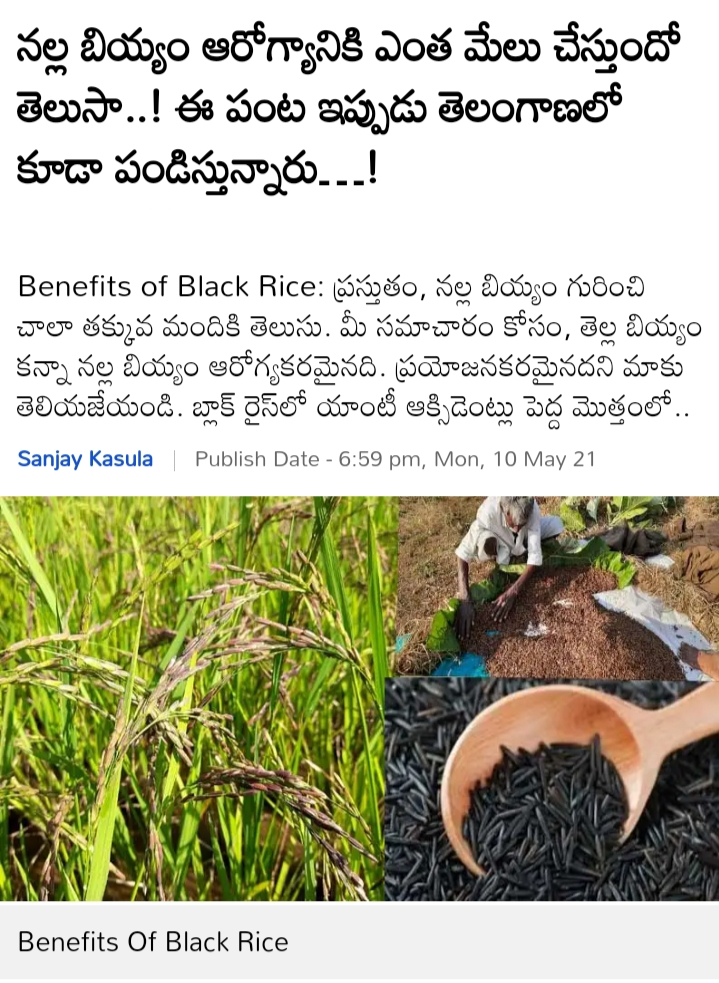
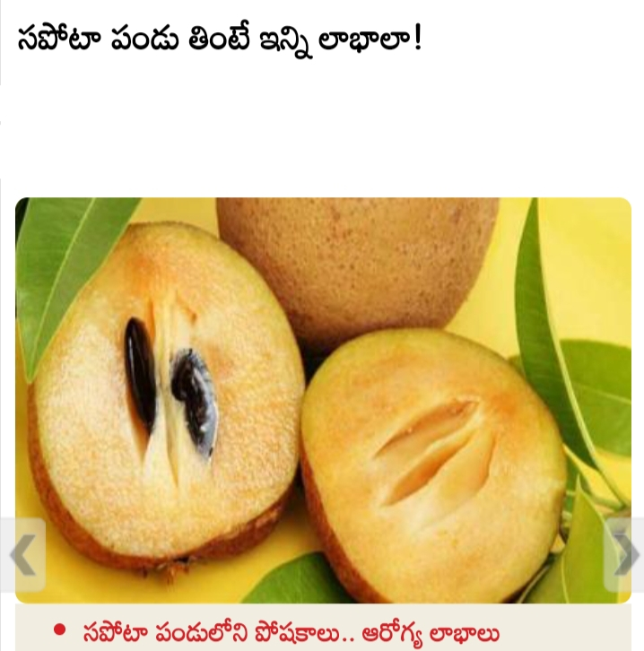

ర౦గుల బియ్య౦.... పోషకలు ఘన౦

పల్లె సీమలో సరికొత ప౦టలు

వైదిక వ్యవసాయ పద్దతితో నల్ల బియ్య౦ ఉథ్పతి

దండిగా ఫండుంది..... స్పందనే లేదండి

ఆ చెట్టు వేరులో క్యాన్సర్ మందు!
ఈ మహిళల అకౌంట్లలోకి రూ.5 వేలు వేస్తున్న మోదీ.. ఇలా అప్లై చేసుకోండి..!

నల్ల బియ్యం ఆరోగ్యానికి ఎంత మేలు చేస్తుందో తెలుసా..!

సపోటా పండు తింటే ఇన్ని లాభాలా!